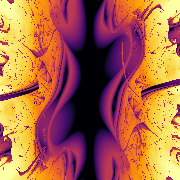

☰
Bertie Pleass
×
Perlin Waves
Clifford Attractor Generator
Lyapunov Exponent
Old lighting website ->
Old objects website ->
Tip: press
Esc
to close. Click outside to dismiss.
NEW PATTERN
Press "N" for new pattern
PERFORMANCE
300,000 pts
BUILD: -- / target 5.00s
IMAGE TYPE
STATIC